Increasing Productivity
Per Capita
(with DevOps)
Adam Krieger
- Software Developer (2007)
- Dev Lead (2013)
- DevOps (2014)
- Consultant with Online (2015)
- Wpgdotnet User Group Board Member (2016)
- Production-First Thinking
- Functional Programming
- ITIL Foundation (2011)
Inspiration for this Talk
- DevOps Enterprise Summit 2016
- DevOps Handbook
- Personal Experience
Agenda
- Why your productivity (per capita) might be suffering.
- What the alternatives are.
- How to implement the change.
Assumptions of ideal:
- Every service change has perfect information
- Changes never conflict (deploy nor run)
- Changes never fail or cause rework
- Since changes will fail, impact is nil
Why Productivity Per Capita Suffers
Merge Conflicts
Ways to Integrate With Slack
- Slash Commands *
- Interactive Messages *
- Incoming Webhooks
- Bot Users
- Event Subscriptions
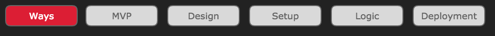
Slash Commands
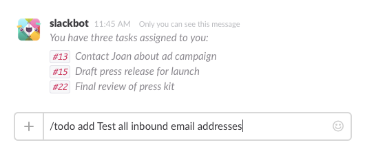Interactive Messages
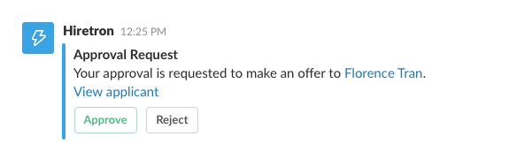 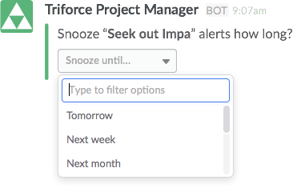Pollease Requirements
- Create a Poll
- Vote!
- Close the Poll
- Print Results
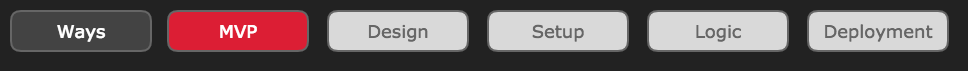
Why Anonymous?
What is your favorite Star Wars character?Create a Poll
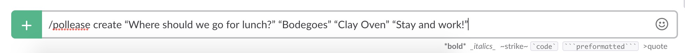Anonymously Vote on a Poll
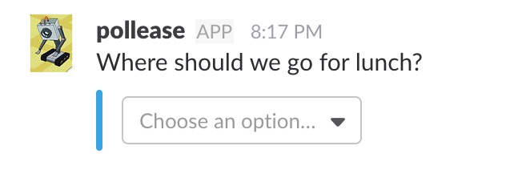 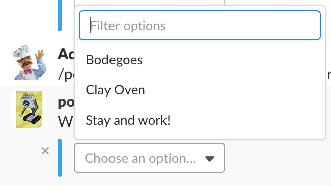Close a Poll & Display Results
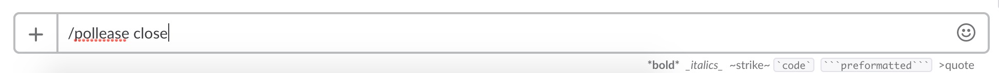 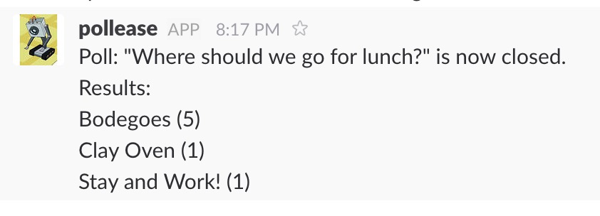Design & Architecture
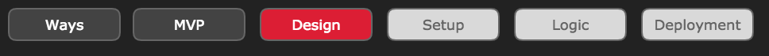
- Try Different Tech
- Dirt-Cheap Infra
- Explore new APIs
- Cloud VM
- Container
- Continuous Integration
Typical Integrations
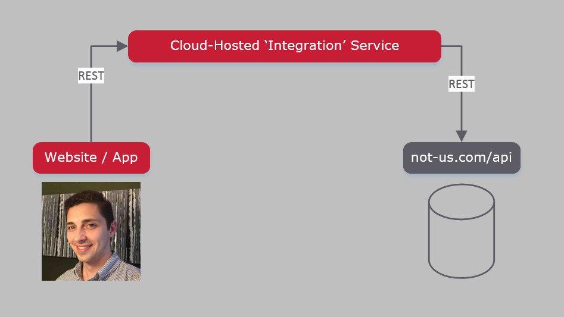Slack Integrations
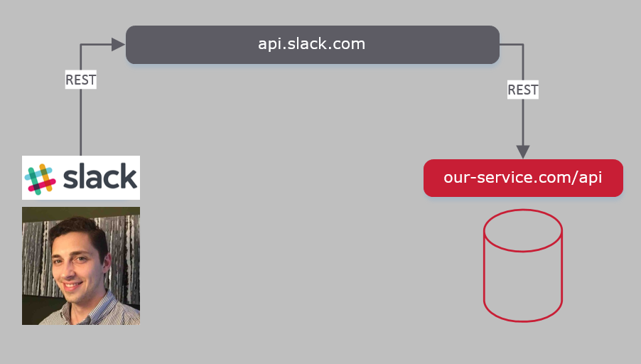Dev Tools
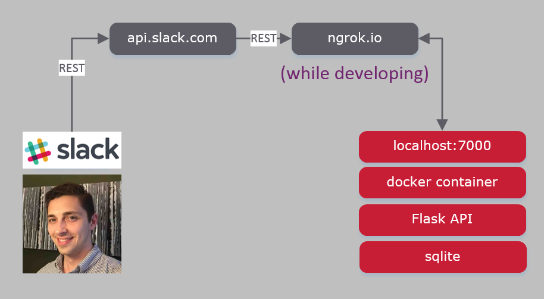Development: Team Integrations
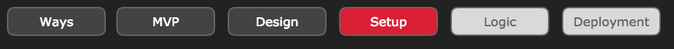
https://api.slack.com/apps
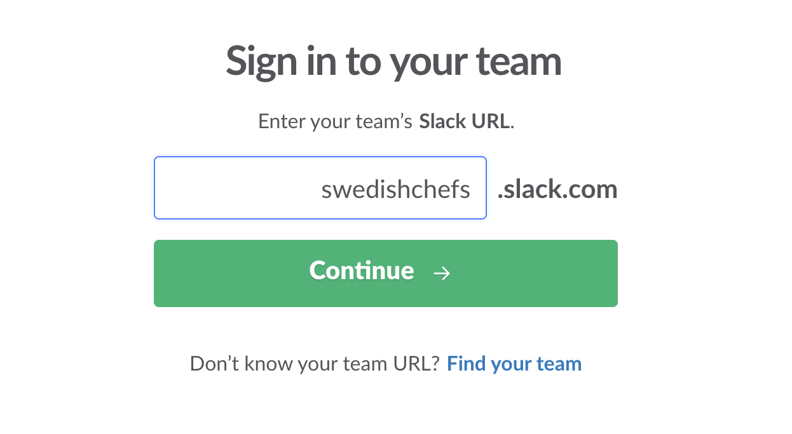Your Apps
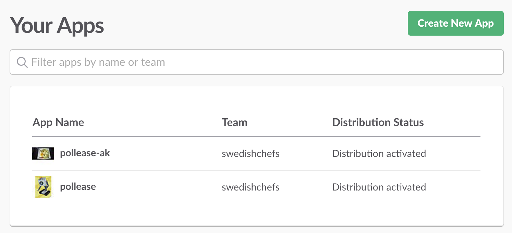Basic Information
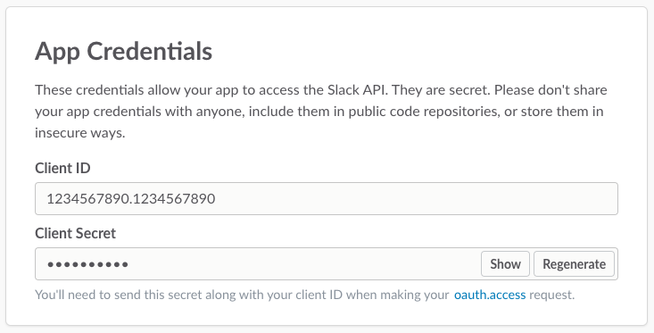Development: Functionality
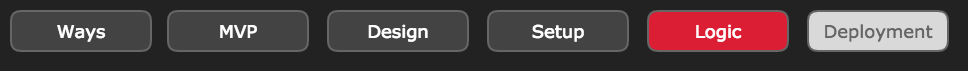
Configure Slash Command
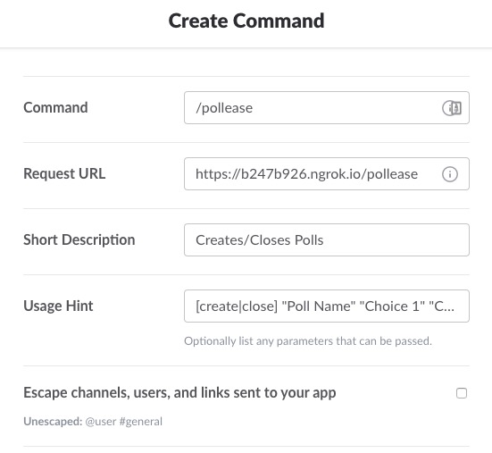Slack Slash Command - Payload Sample
{
"data": [
"token=TOKENNNNNN&team_id=T3F55CL14&team_domain=swedishchefs&channel_id=C3F55CNDC&
channel_name=general&user_id=U3DQ62P5X&user_name=adam.rehill&command=%2Fpollease&
text=create+%22Where+should+we+go+for+lunch%22&response_url=https%3A%2F%2F
hooks.slack.com%2Fcommands%2FT3GARBAGEFJuO0taWFevCp"
]
}
class SlackCommand(object):
command = ""
text = ""
team_id = ""
team_domain = ""
channel_id = ""
channel_name = ""
user_id = ""
user_name = ""
response_url = ""
Parsing & Routing the Slash Command
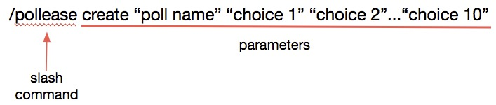
def route_pollease_command(command_text):
params = shlex.split(command_text.encode('utf8'))
action = params.pop(0).lower()
if action == ACTION_CREATE:
return create_poll
elif action == ACTION_CLOSE:
return close_action
else:
raise CommandParsingException(ERR_PARSING_ACTION)
The Domain
class Poll(object):
poll_id = ""
team_id = ""
channel_id = ""
name = ""
date_open = 0
date_close = 0
owner_user_id = ""
poll_choices = []
class PollChoice(object):
choice_id = ""
name = ""
Create Poll
def create_poll(repo, db_conn, command_details):
poll_name, raw_poll_choices = parse_create_command(command_details.text)
current_poll = repo.fetch_poll_by_channel(db_conn, \
command_details.team_id, command_details.channel_id, now)
if current_poll is not None:
return generate_return_message(ERR_POLL_ALREADY_IN_PROGRESS)
poll_choices = []
for choice in raw_poll_choices:
poll_choices.append(PollChoice(str(uuid.uuid4()), choice))
new_poll = Poll(str(uuid.uuid4()), command_details.team_id, \
command_details.team_domain, command_details.channel_id, \
command_details.channel_name, poll_name, arrow.utcnow().timestamp \
None, command_details.user_id, poll_choices)
repo.persist_poll(db_conn, new_poll)
return generate_new_poll_response(new_poll)
Create Poll - Response
for choice in poll.poll_choices:
options.append(
{
"text": choice.name,
"value": poll.poll_id + " " + choice.choice_id
}
)
return {
"text": poll.name,
"response_type": "in_channel",
"attachments": [
{
"callback_id": "vote_callback",
"color": "#3AA3E3",
"actions": [
{
"type": "select",
"options": options
}
]
}
]
}
Create Poll - Response
Close Poll
def close_poll(repo, db_conn, command_details):
current_poll = repo.fetch_poll_by_channel(db_conn, \
command_details.team_id, command_details.channel_id)
if current_poll is None:
return generate_return_message(ERR_NO_POLL_IN_PROGRESS)
elif current_poll.owner_user_id != command_details.user_id:
return generate_return_message("You are not the creator of this poll.")
else:
current_poll.date_close = arrow.utcnow().timestamp
repo.update_poll(db_conn, current_poll)
poll_votes = repo.fetch_poll_votes(db_conn, current_poll.poll_id)
return generate_return_message("Poll: '" + current_poll.name + "' \
is now closed. \n Results: \n " + format_poll_votes(poll_votes))
Return Helper Method
def generate_return_message(message, options=None):
msg = {
"response_type": "ephemeral",
"text": message
}
if options is not None:
msg.update(options)
return msg
Close Poll - Response
{
"text": "Poll: Where should we go for lunch? is now closed. \n
Results: \n
Bodegoes (5) \n
Clay Oven (1) \n
Stay and Work! (1)"
}
Configure Interactive Messages
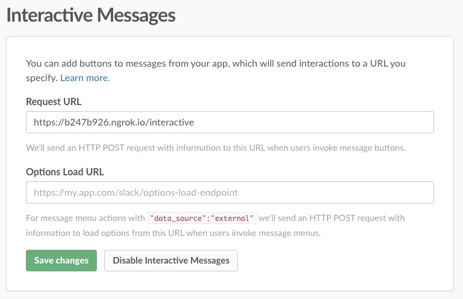Handling a Vote
def interactive():
params = json.loads(request.form.get("payload"))
voter_user_id = params.get("user").get("id")
action_dict = params.get("actions")[0]
vote_values = action_dict.get("selected_options")[0].get("value").split()
poll_id, poll_choice_id = vote_values[0], vote_values[1]
db_conn = get_db()
return cast_vote(repo, db_conn, poll_id, poll_choice_id, voter_user_id)
Handling a Vote
def cast_vote(repo, db_conn, poll_id, poll_choice_id, voter_user_id):
repo.persist_vote(db_conn, poll_id, poll_choice_id, voter_user_id)
msg_options = {
"replace_original": False
}
return generate_return_message("Your vote has been received", msg_options)
Voting Response
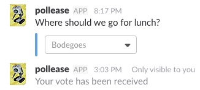Deployment on the Cheap
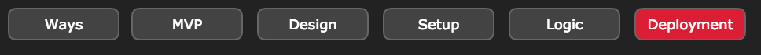
Docker Cloud
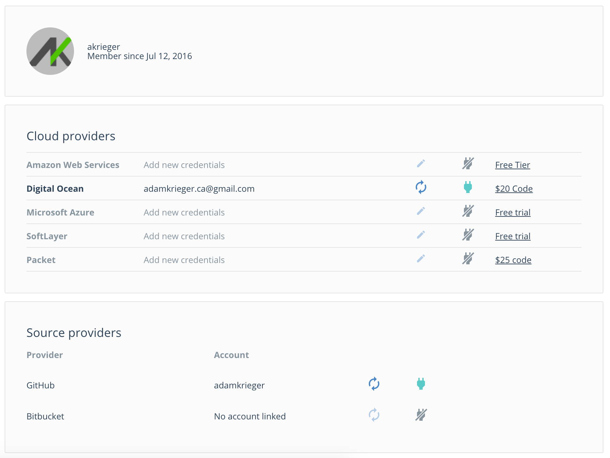GitHub Link
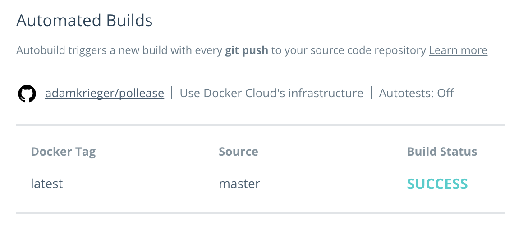Update Slash Commands
Update Interactive Messages
Bonus Material!
Slash Commands
Interactive Messages
Bot Users
- Monitor and process channel activity
- Post messages and react to users

Bot Users
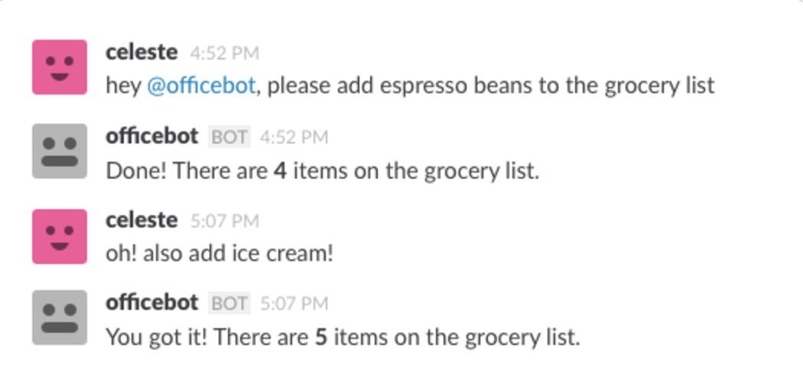Incoming Webhooks
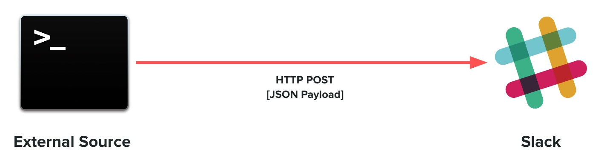Incoming Webhooks
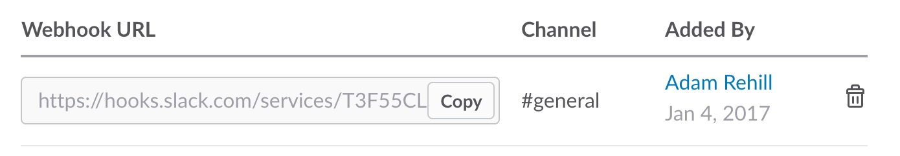 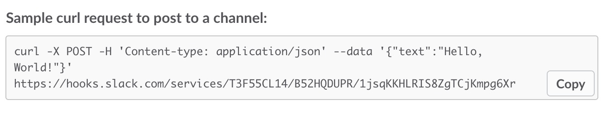 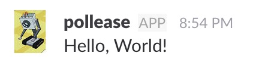Event Subscriptions
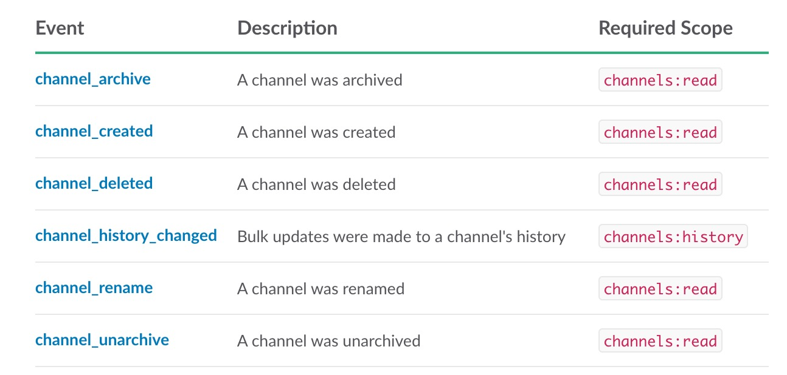- Don't call Slack...let Slack call you
- Subscribe to the events YOU need